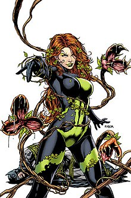

Villains
Joker

The Joker has undergone many revisions since his 1940 debut. The most common interpretation of the character is that he is disguised as the criminal Red Hood, and pursued by Batman. The Joker falls into a vat of chemicals which bleaches his skin, colors his hair green and his lips red, and drives him insane. The reasons why the Joker was disguised as the Red Hood, and his identity before his transformation have changed over time. atman: The Killing Joke (1988) built on the Joker's 1951 origin story, portraying him as a failed comedian pressured into committing crime as the Red Hood to support his pregnant wife. Batman's interference causes him to leap into a chemical vat, which disfigures him. This, combined with the trauma of his wife's earlier accidental death, causes him to go insane and become the Joker. However, the Joker says that this story may not be true, as he prefers his past to be "multiple choice".
Poison Ivy
Poison Ivy's real name is Dr. Pamela Lillian Isley, PhD, a Gotham City botanist. She grows up wealthy with emotionally distant parents and later studies advanced botanical biochemistry at a university with Alec Holland under Dr. Jason Woodrue. Isley, a shy girl, is easily seduced by her professor. Woodrue injects Isley with poisons and toxins as an experiment, causing her transformation. She nearly dies twice as a result of these poisonings, driving her insane. Later, Woodrue flees from the authorities leaving Isley in the hospital for six months. Enraged at the betrayal, she suffers from violent mood swings, being sweet one moment and evil the next. When her boyfriend has a car accident after mysteriously suffering from a massive fungal overgrowth, Isley drops out of school and leaves Seattle, eventually settling in Gotham City.
Two-Face
Two-Face is Harvey Dent, Gotham City's handsome young District Attorney. Dent forges an alliance with police captain James Gordon and Batman to rid Gotham of organized crime. Mob boss Carmine Falcone bribes corrupt Assistant District Attorney Vernon Fields to provide his lieutenant Sal Maroni, whom Dent is trying for murder, with sulfuric acid; Maroni throws the acid in Dent's face during a cross-examination, horribly scarring the left side of Dent's face. Dent escapes from hospital and reinvents himself as the gangster Two-Face. He scars one side of his father's coin, and uses it to decide whether to commit a crime. Eventually, Two-Face takes his revenge on Fields and Maroni, but is captured by Batman, leading to his incarceration in Arkham Asylum.
Lex Luthor
An aspiring scientist who resides in Smallville, the hometown of Superboy. The teenage Luthor saves Superboy from a chance encounter with kryptonite. In gratitude Superboy builds Luthor a laboratory, where weeks later he manages to create an artificial life-form, which Luthor loved as if it were his own child. Grateful in turn to Superboy, Luthor creates an antidote for kryptonite poisoning. However, an accidental fire breaks out in Luthor's lab. Superboy uses his super-breath to extinguish the flames, inadvertently spilling chemicals which cause Luthor to go bald; in the process, he also destroys Luthor's artificial life form. Believing Superboy intentionally destroyed his discoveries, Luthor attributes his actions to jealousy and vows revenge (It is possible that the sudden change, in personality, of Luthor is also due to the combination of the smoke derived from the fire with the fumes from the spilled chemicals, inhaled by him, in a way similar to what happened to Joker when he fell into a chemical vat, changing permanently his skin's and his hair's color, too).